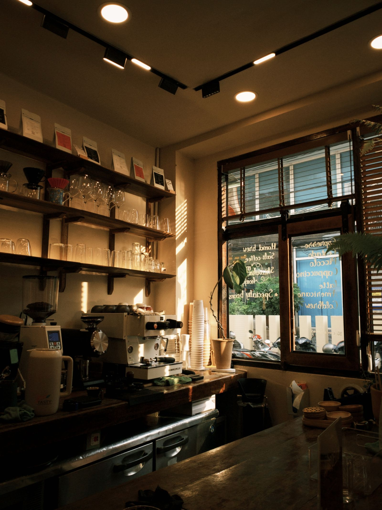

About Insomniac

Insomniac is open when the rest of the world is asleep — late into the night, and early before the sun's up.
For anyone who can't sleep, working a late shift, or just needs somewhere warm to sit for a while, we're here with cinnamon rolls, hot coffee, and a quiet place to rest.
Especially now, as the nights get colder, Insomniac is the coziest place in town to slow down.
You don't need a reason to come in — no order too small, no hour too strange. Sit as long as you like. We'll be here until the sun's up.